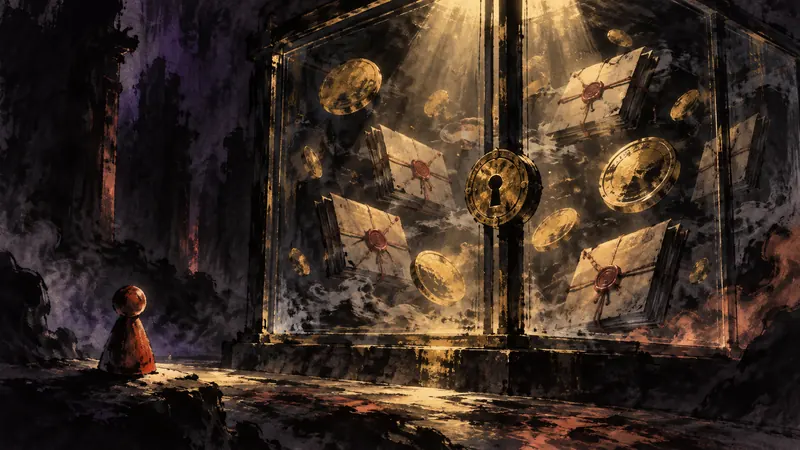

Policy

ED attaches assets worth Rs 442 crore in Rummyculture money laundering Case
Source: MediaNama（印度政策，英語，含遊戲）
The 442.35 crore rupees is only the latest amount; what truly matters to players is ED’s broader set of allegations concerning bot players, withdrawal restrictions, and the flow of assets, as well as how individual losses will be addressed.
Impact on players: Players who deposited or withdrew funds on the relevant platforms should preserve their deposit, withdrawal, and transaction records and consult official information about the asset disposition, because asset attachment does not mean that individual players have received refunds.
Take: For players, this case reframes spending that may look like entertainment consumption as a question of platform responsibility and whether assets can be recovered; regulators’ handling of company assets will not automatically make individuals whole.